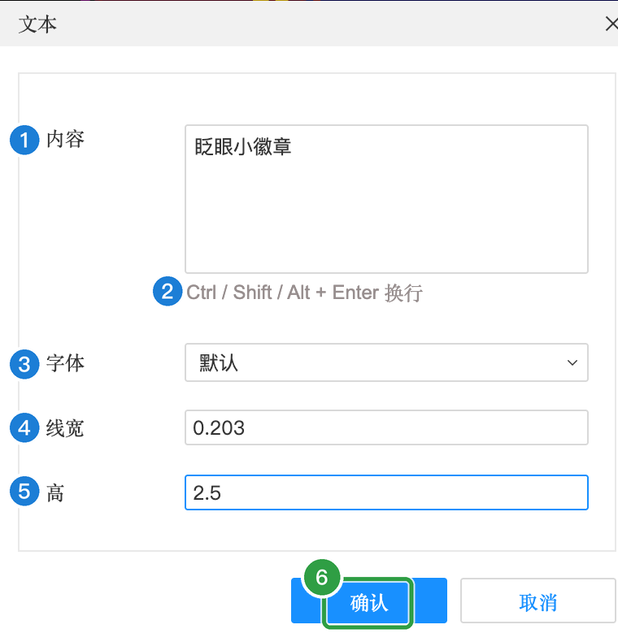
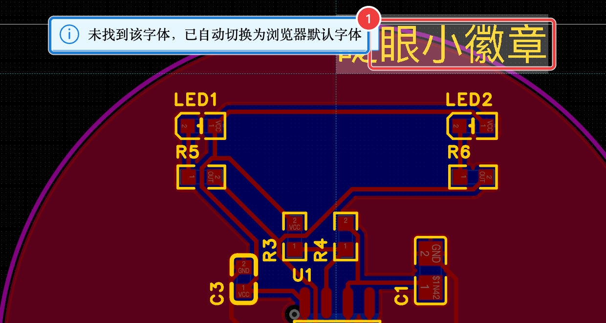
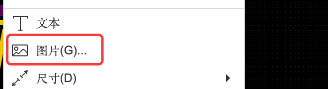

A-8 丝印与 Logo
丝印就是印在板子表面的文字和图案。这是整个案例里最能体现“这是我的作品”的地方：写上作品名、你的名字，甚至放一个自己的 Logo。
A8.1 位号丝印#
每个元件旁边的 R1、C1、LED1……就是位号丝印，焊接和排错时靠它认元件。转换到 PCB 时已经自动带上了，只需注意：
- 位号不要压在焊盘上（会被开窗切掉，印不出来）；
- 方向尽量统一，读起来方便。
位号文字可以单独选中拖动。本例自动生成的位置基本可用，DRC 也没有报丝印问题，就不调整了。
A8.2 写上作品名#
- 在底部图层快捷栏点「顶层丝印层」，把当前层切过去
- 点菜单「放置」→「文本」
- 在弹出的对话框里填好内容和字高，点「确认」

文本对话框
| 编号 | 属性 | 含义（大白话） | 本例怎么填 | 什么时候需要改 |
|---|---|---|---|---|
| 1 | 内容 | 要写的文字，可以是中文 | 眨眼小徽章 | 🎨 换成你想写的 |
| 2 | 换行提示 | 想写多行时，按 ⇧return（或 ⌃ / ⌥ + return）换行 | 一行 | — |
| 3 | 字体 | 文字用的字体。输入中文后会自动换成「黑体」，中文能正常显示 | 默认（自动变黑体） | 想要别的风格时 |
| 4 | 线宽 | 文字笔画的粗细 | 0.203 mm（默认） | 太细印不清，别小于 0.15 mm |
| 5 | 高 | 文字高度 | 默认 3.048，改成 2.5 mm | 字太小（低于约 1 mm）会糊 |
| 6 | 确认 | 确认后文字跟着鼠标，单击放下 | 点它 | — |
- 文字跟着鼠标走，移到板子上方单击放下
- 选中文字，在右侧属性里调整位置让它左右居中（文字宽约 12.5 mm，板子中心 X = 20）

A8.3 🎨 放一个自己的 Logo#
